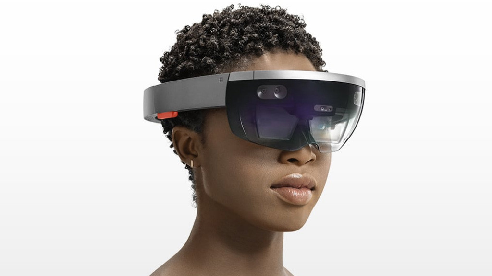
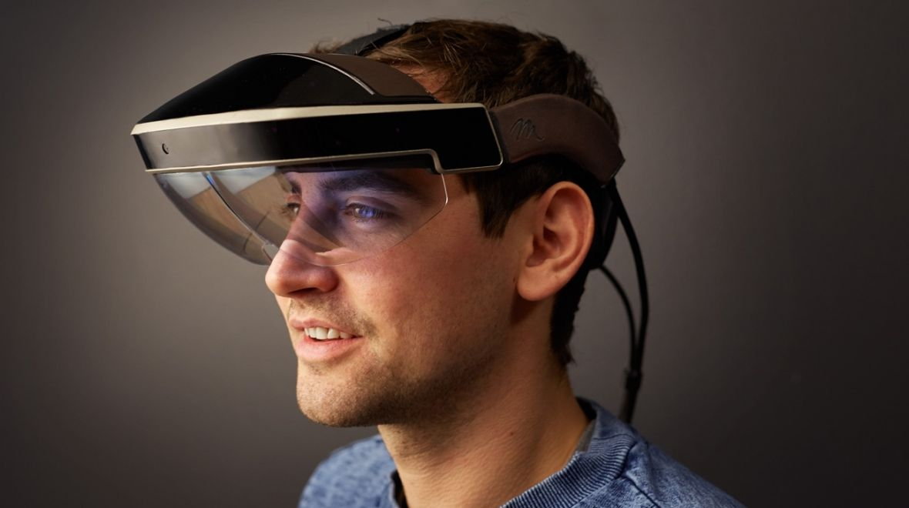
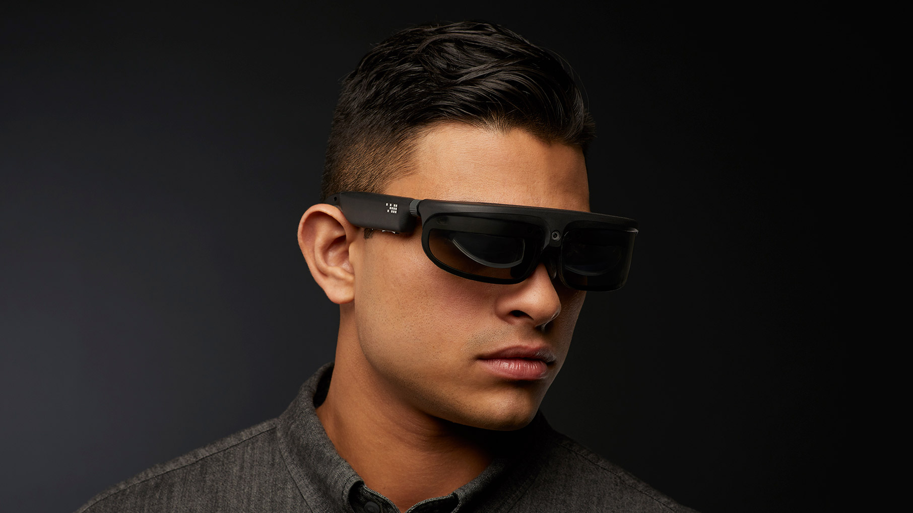
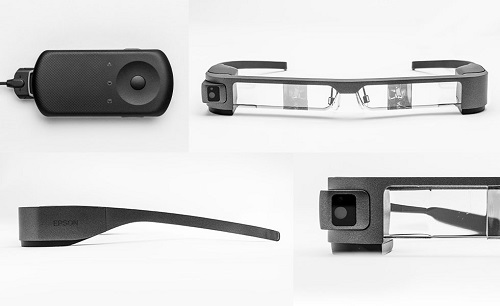
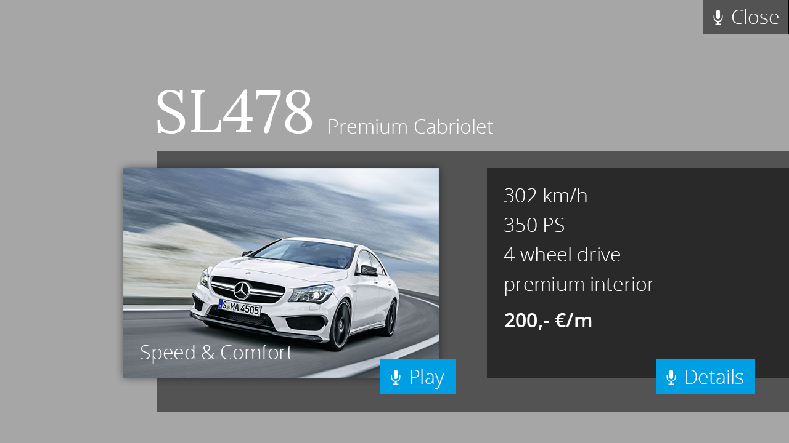
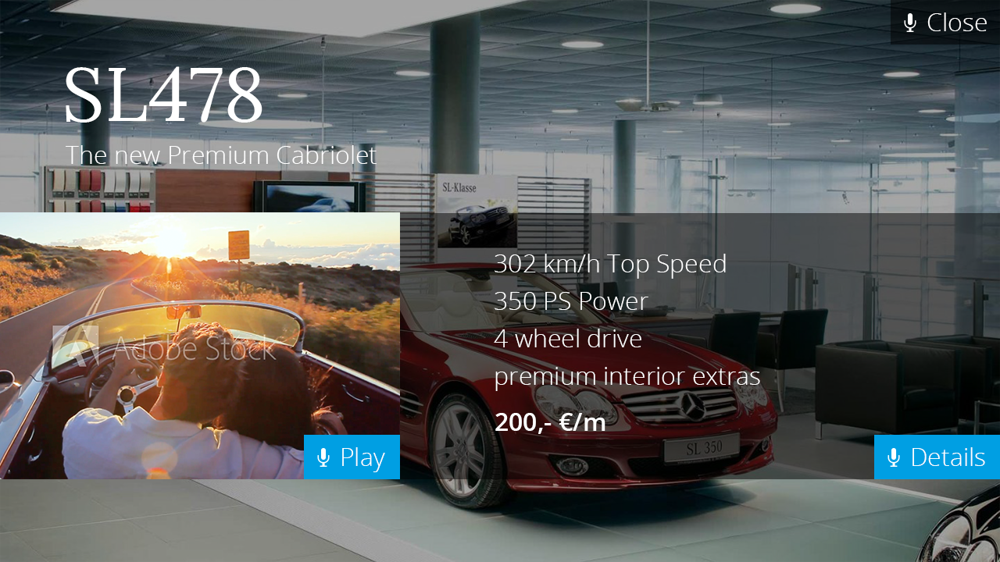

class: middle, center, titleslide <div width="100%" style="positionbackground-color:var(--dark-grey)"> <h1> Abschlusspräsentation</h1><br><br> </div> ### Augmented Reality Showcase --- class: standardslide ### Idee .main[ * Neue Technologien probieren * Kombinieren mit neuen FirstSprit Möglichkeiten (CaaS) * Gewinnen von Kunden ] -- class: standardslide ###Technolgien .main[ **Software** * FirstSpirit, Content As A Service * Augmented Reality * Voice Recognition **Hardware** * AR Brille (kein 3D/ Virtual Reality) ] --- class: standardslide ### Anwendungsszenarien .main[Für die Entwicklung der Anwendungsszenarien wurde ein Brainstorming durchgeführt. Im Ergebnis entstanden 3 potentiell interessante Usecases. 1. Mitarbeiter Vertrieb 2. Mitarbeiter Service 3. Kunde] <div style="margin-top:4em;display:flex;flex-direction:row;justify-content:space-around;"> <img src="brain2.jpg" style="height:200px;object-fit:contain;border-radius:10px"/> <img src="brain1.jpg" style="height:200px;object-fit:contain;border-radius:10px"/> </div> --- class: standardslide ### Szenario Kunde .main[ Kunde geht zum Fahrzeug. Ein Interface wird eingeblendet.<br> Interface bleibt am Fahrzeug 'haften'.<br> Kunde kann via Sprache oder Fernbedienung innerhalb des Interfaces navigieren.<br> Fahrzeugdaten werden via CaaS abgerufen und aktualisiert.<br> Kunde bekommt Fahrzeugdaten (statisch und dynamisch), Videos/ Bilder angezeigt.<br> Kleine Animationen verbessern das Erlebnis.<br> ] --- class: titleslide, middle, center #Projektverlauf / Historie --- class: standardslide ### Einarbeitung .main[ * Android, FirstSpirit & CaaS. ] -- class: standardslide ### .cap[TestApp:] CaaS .main[ * Stellt Einzelrequest an Caas * bekommt Bild als Zeichenkette zurück. ] -- class: standardslide ### Ankunft Vuzix .main[ * Leichte Enttäuschung bei allen Beteiligten * Near Eye*Microdisplay/Visual Assistant* anstatt *Optical See Through*. * Gleich Probleme bei der Anbindung an das Vuzix SDK. * Wenig/ Schlechter Support. ] --- class: standardslide ### Recherche Alternativen .main[ * AR Brillen: * Hololens, Microsoft * Meta2, Meta * ODG R7 * Epson Moverio BT300 * ShimaLaforge * VR Brillen: * Oculus Rift, HTC Vive, Google Daydream, Sony Playstation VR * Preisrange von USD 200 bis ca USD 4000 * Qualitätskriterien * Field Of View, Displaytyp, Leistung, Tethering, Gewicht, Support, Verfügbarkeit ] --- class: middle, center, standardslide  --- class: middle, center, standardslide  --- class: middle, center, standardslide  --- class: middle, center, standardslide --- class: standardslide ### Entscheidung für Epson Moverio BT300 .main[ * See Through Display * Preis aktzeptabel * Epson relativ etabliert und zu Support fähig ] -- class: standardslide ### .cap[TestApp:] Basics. .main[ * Bilder, Text und Video. * Menüleiste mit Icons * Fragments. ] -- class: standardslide ### .cap[TestApp:] Listen .main[ * Recyclerview ] --- class: standardslide ### Ankunft Epson Moverio .main[ * Erster Eindruck: deutlich besser als bei Vuzix. Interessantes Bild. * Schärfegrad an den Rändern des Displays je nach Träger unterschiedlich. * Testen erster Apps hinterlässt ordentlichen Eindruck. ] <div style="height:50%;display:flex;flex-direction:row;justify-content:space-around;">  </div> --- class: standardslide ### .cap[TestApp:] Objekterkennung .main[ * Erste Runde: QR Codes * Recherche alternativer QR Codes: * Facebook Messenger, Snapchat, Qrhacker * Aber: QR Codes auf große Distanz kaum Trackbar und wenn dann nur indem man riesige Codes verwendet. Visuell wenig ansprechend * Zweite Runde: Imagetracking * Komplexe Bilder, kontrastreich, flach, glanzfrei * Verwendungsidee: Banner der im Showroom hinter dem Fahrzeug steht dient der Erkennung. * Dritte Runde: Objekterkennung. Ausstehend. ] <div style="height:20%;display:flex;flex-direction:row;justify-content:space-around;"> </div> --- class: standardslide ### CaasAbfrage Komponente. .main[ * Rico fügt Komponente hinzu. ] -- class: standardslide <h3>Recherche AR Frameworks</h3> .main[ * EasyAR - ausreichend, kostenlos * Vuforia - top, kostenpflichtig oder branding * ARToolKit, Kudan, Wikitude - noch nicht ausführlich recherchiert. ] -- class: standardslide <h3>.cap[TestApp:] AR Framework.</h3> .main[ * EasyAR. Leichte Einbindung. Kostenlos. Verschiedene Beispiele. Performance ok. * Vuforia. Zwar besser/ schneller aber nicht ohne Wasserzeichen kostenlos erhältlich. ] --- class: standardslide ### .cap[TestApp:] Button Animation. .main[ * Idee: Auswahl von Buttons durch hinschauen/ bewegen. * Dann Auslösen einer Animation die den Auswahlprozess signalisiert * Leider am Ende keine Verwendung im Projekt. * ***Problem***: erste schwere Unterschiede zwischen Brille und Smartphone. * Buttonhovereffekte auf Telefon funktional, auf Brille fehlerhaft. Umständlicher Umbau. Verdoppelung von Code, zunehmende komplexität die normalerweise unnötig gewesen wäre ] -- class: standardslide <h3>.cap[TestApp:] Sprachsteuerungsmodul von RB.</h3> .main[ * Pocket Sphinx * funktional auch offline * basierend auf englischem dictionary/ Wörterbuch ] --- class: middle, center, standardslide --- class: standardslide ### .cap[ShowcaseApp:] Teaser .main[ *Design Überlappungen. Eigentlich von Android nicht vorgesehen/ bzw. nicht sauber umzusetzen (negative Margins). Neg. Margins werden nur in bestimmten Viewklassen verwendet. Erfahrung: Zuerst rausfinden ob alles grundsätzlich umsetzbar ist, dann erst mit implementierung anfangen... * * Teaser Designumsetzung. Erstes Design. * Teaser Einblendung und sticky * ***Herausforderung*** : Umwandeln von Bildtrackingdaten in Bildschirmpositionen 3x4 Matrix --> x,y Koordinaten ] --- class: middle, center, standardslide  --- class: standardslide ### .cap[ShowcaseApp:] Main Screen .main[ * Main Screen Designumsetzung Erstes Design. * Einbinden von Video. * Einbinden von CaaS Daten * ***Herausforderung***: Caas Polling in seiner ursprünglichen Implementierung nur Anroid 5 kompatibel (für Brille), in Android 7 Schwierigkeiten und neuimplementierung notwendig. * Einbinden von statischen Daten (DataBinding). * Buttons ] --- class: standardslide ### .cap[ShowcaseApp:] CaaS Update .main[ * Visualisierung von Update * Animationen von Vektorgrafiken ] -- class: standardslide <h3>.cap[ShowcaseApp:] Animation Video Screen</h3> .main[ * Fullscreen Video inklusive Mediacontroller. ] -- class: standardslide <h3>.cap[TestApp:] Sprachsteurung auf Brille.</h3> .main[ * Funktioniert auf dem Smartphone. Aber nicht auf der Brille. * 2 Fehler gleichzeitig: * Kapputes Mikro * Bei zwei Installationen hat eine die andere blockiert. * Wenn die App läuft blockiert sie den Audiokanal auch nach dem Schließen. ] --- class: standardslide <h3>Zunehmende Schwierigkeiten mit Brille.</h3> .main[ * Grünstich immer deutlicher * Transparenzen verhalten sich unerwartet. * WLAN Login Problematisch * Mikro fehlerhaft * Entscheidung: Brille wird eingesendet. ] -- class: standardslide <h3> Arbeit wird auf Smartphone fortgesetzt.</h3> .main[ * Plötzlich sieht Design anders aus. * Unterschiedliche Bildschirmauflösungen bei Android zwar normal, aber bisher nicht vorgesehen gewesen. * Unterschiedliche Pixeldichten * Keine Pixeldichte auf Brille angegeben. Kein Testen möglich. ] --- class: standardslide ### Zweiter Designentwurf. .main[ * Umsetzung Teaser * Umsetzung Main Screen * VideoScreen Unverändert ] -- class: standardslide <h3> Transitionen. Animationen.</h3> .main[ * FadeIn/ FadeOut Teaser * FadeIn, Slides Main Screen] --- class: titleslide, middle, center # Showcase Demo --- class: middle, center, standardslide  --- class: titleslide, middle, center # Fazit --- class: standardslide ### Zukünftige Themen .main[ 1. Menünavigation/ Eigeninteraktion 2. Anbindung Coremedia 3. Online Sprachsteuerung 4. Verwendung besserer AR Tools/Frameworks 5. Auswahl durch Fokussieren 6. Verschiedene Fahrzeuge in Abhängigkeit vom Tracking Image 7. 3D Objekte tracken ] -- <h3>Erfahrungen/ Fragen.</h3> .main[ * Wie löst man Bugs richtig auf? Wie ist die richtige Herangehensweise? * Wieviel Detailarbeit ist nötig bei einem Prototypen und wann? * Vieles was man tut/baut wird wieder verworfen. * AR nächstes Mal erst mal auf Smartphone entwickeln! Später portieren. ] --- class: titleslide, middle, center # Vielen Dank! [logo]: lambo.jpg "Gelber Lambo" [central2]: Central_second.png "Second Design" [central1]: Central_first.png "First Design" [fb_qr]: facebook_qr.png "FB QR" [snap_qr]: snapchat_qr.png "Snap QR" [holo]: hololens.jpg "Hololens" [meta]: meta.jpg "Meta 2" [odg]: odg.jpg "ODG 7" [laforge]: Laforge.png "Laforge"